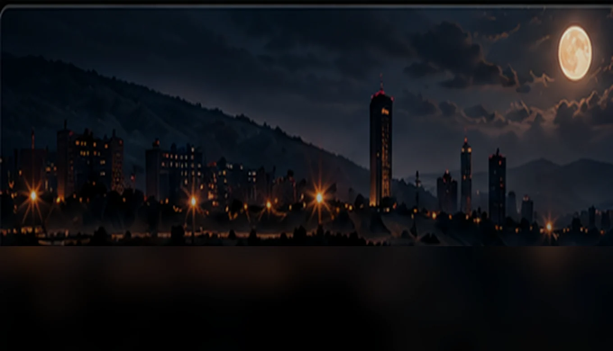
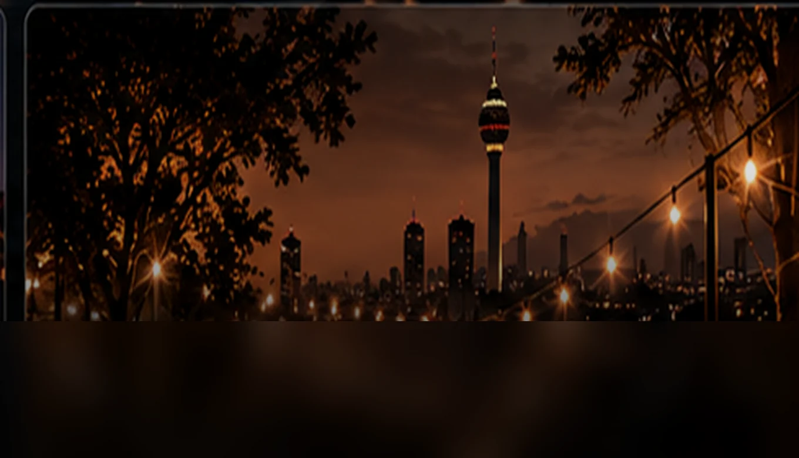
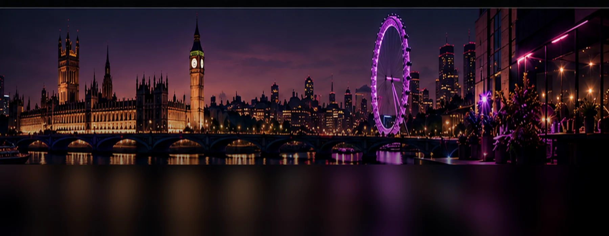

CORE MUSIC / PROJECTS
Different sounds.
One creative pulse.
Four distinctive starting points — and room for every world that comes next.

CINEMATIC / NARRATIVESUSSUZ SOUNDTRACKS NOCTURNAL / ATMOSPHERICkhrysaor
NOCTURNAL / ATMOSPHERICkhrysaor
ANKARA / CELEBRATIONANGARALI KEREMSİ
GLOBAL / ELECTRONICCORE MUSIC LONDON